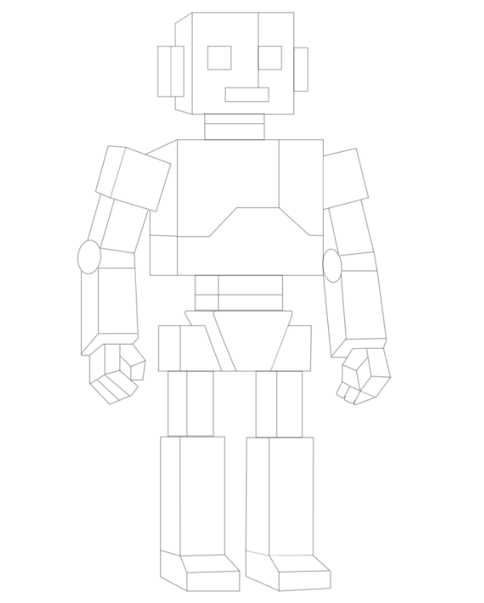
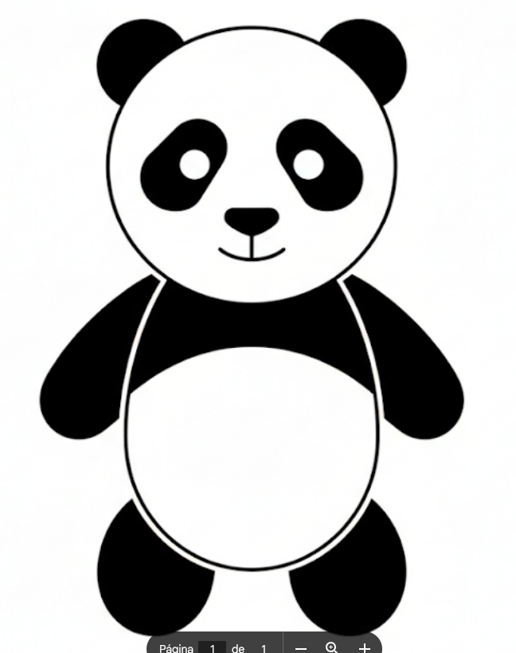
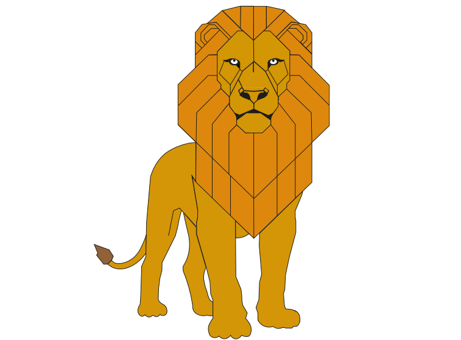

En esta primera práctica se llevo a cabo la construcción geométrica en Adobe Illustrator de un robot teneindo como base una referencia de la imágen, se tomo en cuenta utilizar una configuración del documento a corde a las opciones que mejor le parecieran al alumno, sin mbargo nos ayudo mucho la opinión del profesor en base a que sería mejor utilizar, también se utilizaron herramientas bases como: rectángulo, elipse, linea/pluma y selección directa. Utilizamos metodologías que nos facilitaban organizarnos al mometno de trabajar y que no se mezclaran trazos o se perdieran una de ellas fue las capas las cuales utilice para la cabeza, brazos, cuerpo y piernas, otras fueron las figuras primarias para dichas partes del robot y el trazo el cual se procuró que fuera de 1pt. Por último se tomaron en cuenta algunos consejos o tips para control del diseño, facilitar el diseño y agilizarlo estos fueron: los atajos con el teclado (barra espaciadora + tecla izq del mouse, tecla ctrl + rueda del mouse o alt + rueda del mouse), zoom y organización de las capas (nombrar cada capa)
Ver PDF
En esta segunda práctica se llevo realizó el dibujo de un oso con la imágen de ello como referencia, en el cual se utilizaron herramientas adicionales a la pluma/linea, rectángulo y selección directa las cuales fueron: circulos, herramienta de curvatura, bote de pintura, herramienta de mano para desplazarme mejor en la hoja de trabajo, color de relleno para las orejas, contorno de ojos, brazos, piernas y cierta parte de la panza y elipse. En esta práctica se aprendió a como copiar una figura, asi no tener que volver a hacerla, como organizar las figuras de modo que, en este caso las orejas queden detras de la cabeza y los ojos adelante del contorno de los ojos. También fueron importantes las capas, como se organizaban tanto las capas como cada trazo o subcapa dentro de ellas.
Ver PDF
En esta tercera y última práctica se construyó la figura de un león algo más elaborado que los trabajos anteriores, para este dibujo utilice pluma/línea de esta herramienta tambien utilice añadir punto de ancla, otras como curvatura, selección directa, entre otros. Sin embargo aunque algunas herramietas que nos enseñaron como eliminar punto de ancla, forma de las flechas, forma de curvatura, entre otras nos facilitan mas el trabajo para esta y otras actividades. Las capas en esta actividad fueron las esenciales para poder organizar de manera adecuada cada forma y poder visualizarlas de mejor manera.
Ver PDF